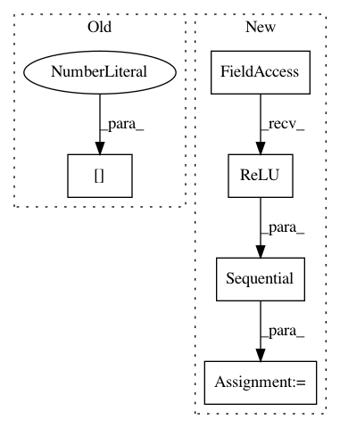

7a1084089da1b116d55dae0f8df871328e7d7a16,test/test_jit_tracing.py,LocalizationNetwork,__init__,#LocalizationNetwork#Any#Any#Any#,44
Before Change
super(LocalizationNetwork, self).__init__()
self.cnn = models.__dict__["alexnet"](pretrained=pretrained)
self.cnn = nn.Sequential(*list(self.cnn.children())[0])
self.cnn = nn.Sequential(*list(self.cnn.children())[:-1])
self.affine = affine
After Change
def __init__(self, output_size, pretrained=True, affine=True):
super(LocalizationNetwork, self).__init__()
self.cnn = nn.Sequential(
nn.Conv2d(3, 16, kernel_size=3, stride=1, padding=1),
nn.ReLU(inplace=True),
nn.Conv2d(16, 16, kernel_size=3, stride=1, padding=1),
nn.ReLU(inplace=True),
nn.MaxPool2d(kernel_size=2, stride=2),
nn.Conv2d(16, 32, kernel_size=3, stride=1, padding=1),
nn.ReLU(inplace=True),
nn.Conv2d(32, 32, kernel_size=3, stride=1, padding=1),
nn.ReLU(inplace=True),
nn.MaxPool2d(kernel_size=2, stride=2),
)
self.affine = affine
if self.affine:
In pattern: SUPERPATTERN
Frequency: 3
Non-data size: 5
Instances
Project Name: arraiy/torchgeometry
Commit Name: 7a1084089da1b116d55dae0f8df871328e7d7a16
Time: 2019-01-11
Author: kaplanonu@gmail.com
File Name: test/test_jit_tracing.py
Class Name: LocalizationNetwork
Method Name: __init__
Project Name: dmlc/dgl
Commit Name: 7a50be64b75a82ee4380284b4a74496d18106b0a
Time: 2018-04-22
Author: zzhang@gmail.com
File Name: mx.py
Class Name:
Method Name:
Project Name: zhanghang1989/PyTorch-Encoding
Commit Name: 8f8fbb9f6543a4ccaad53923d33647e7138d95ea
Time: 2017-10-15
Author: zhang.hang@rutgers.edu
File Name: encoding/parallel.py
Class Name: ModelDataParallel
Method Name: __init__